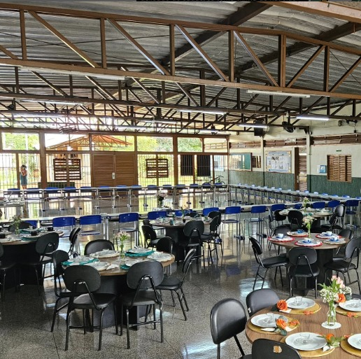
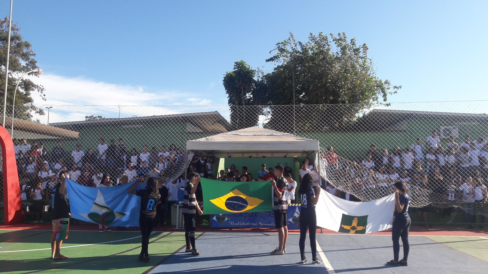
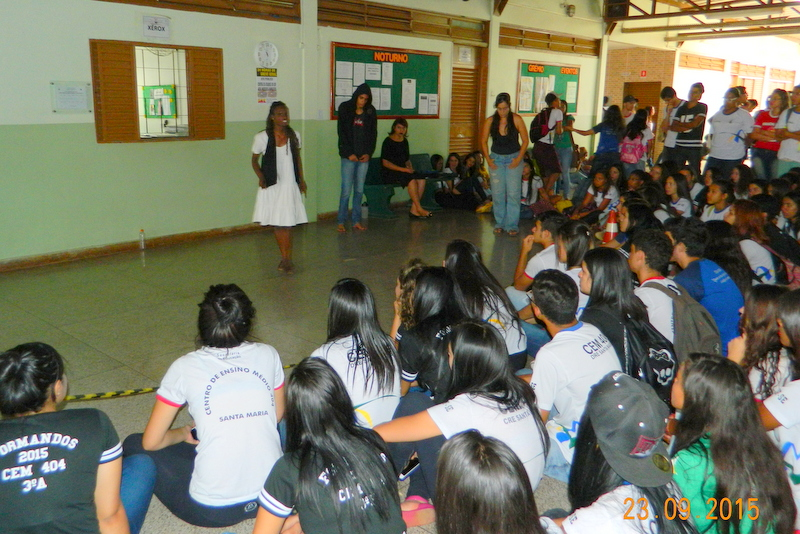
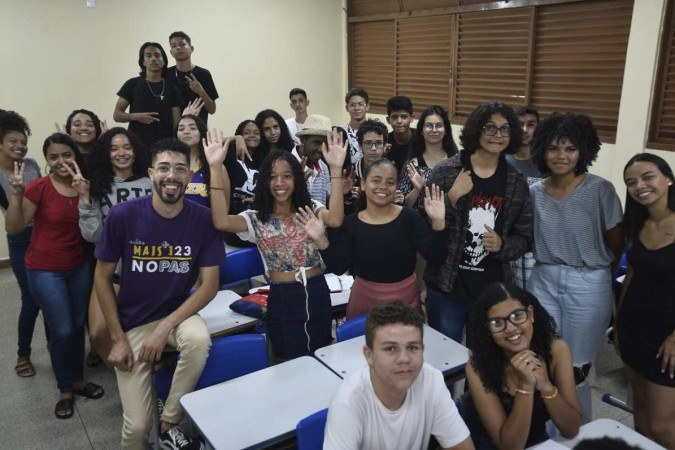
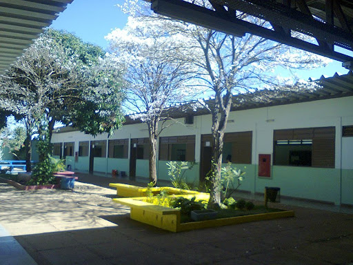

O CEM 404 de Santa Maria, localizado em Brasília, é muito mais do que apenas uma escola. É um espaço onde jovens encontram um ambiente propício para aprender, crescer e se desenvolver. Situada na Quadra CL 404, Bloco A, Área Especial, em Santa Maria, a instituição oferece ensino médio de qualidade, preparando os alunos para os desafios do futuro.
A escola possui uma infraestrutura completa, projetada para oferecer aos alunos tudo o que eles precisam para aprender de forma eficaz. As salas de aula são equipadas com recursos modernos, como projetores, que tornam as aulas mais dinâmicas e interativas. Além disso, a escola conta com laboratórios de informática e ciências, biblioteca, quadra esportiva, auditório, pátio coberto, área verde e sala de professores, proporcionando um ambiente rico em possibilidades.
A proposta pedagógica do CEM 404 de Santa Maria vai além da mera transmissão de conhecimento. A escola busca desenvolver nos alunos habilidades como o pensamento crítico, a criatividade, a colaboração e a autonomia, preparando-os para serem cidadãos atuantes e responsáveis. Através de projetos interdisciplinares, atividades extracurriculares e eventos culturais, a escola estimula o desenvolvimento integral dos alunos.

O dia a dia na escola é marcado por uma rotina dinâmica e desafiadora. As aulas são ministradas por professores qualificados e apaixonados pelo que fazem, que utilizam diferentes metodologias de ensino para tornar o aprendizado mais significativo. Além das aulas, os alunos participam de diversas atividades que complementam a sua formação, como clubes, projetos de pesquisa e eventos esportivos.
A escola mantém uma relação estreita com a comunidade, buscando a participação dos pais, alunos e professores na construção de um projeto educativo coletivo. Através de eventos e projetos em parceria com a comunidade, a escola fortalece os laços entre a escola e a sociedade, tornando-se um espaço de referência para a comunidade local.

O CEM 404 de Santa Maria tem se destacado por seus resultados e pela qualidade do ensino oferecido. A escola possui um corpo docente qualificado e comprometido com a aprendizagem dos alunos, e os resultados obtidos nos principais exames nacionais demonstram a excelência do trabalho desenvolvido.
O Centro de Ensino Médio 404 de Santa Maria é muito mais do que uma escola. É um espaço de aprendizado, de crescimento pessoal e de construção de um futuro melhor. Com uma estrutura completa, uma proposta pedagógica inovadora e um corpo docente qualificado, a escola oferece aos seus alunos todas as ferramentas necessárias para alcançar o sucesso.
